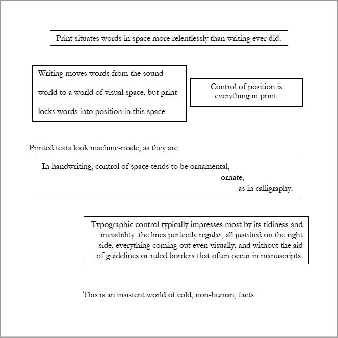

Exercise 3
Text
Description:
Within a 6 x 6-inch square, compose the text provided below* in a manner that expresses its meaning. Use Garamond only.** Use variations in alignment, leading, line length, orientation, and spacing. Avoid variations in weight (no boldface) or size (larger and smaller font sizes). You may break the paragraph into smaller elements and distribute them within the square. Be sure to have a concept in mind as you work. See pp. 118-119 in your textbook "Thinking with Type" for examples to get you started.

First, in this 6x6 inch square, I tried to visualize how each section of text would look like in their positions after reading the paragraph a few times. There seemed to be a focus on space, so I made sure to divide each sentence into its own text box, making sure to leave sufficient space for the ending sentence, which was supposed to be cold, and non-human. I noticed that there was a similar sentence about printed texts looking machine-made. I decided to leave these out of a text box, as they needed to look like regular print, cold, uncalculated text. I centered the box describing print situating words in space, and double spaced the sentence about visual space. For the sentence about control in print, that box was aligned in center with the box next to it, and is aligned to the right margin of the page. For the handwriting sentence, I spaced the last few words with indents to the next line, because it reminded me of how poetry does this often. Next, the sentence that talked about control being invisible was right aligned, and spaced as best as I could to look even.